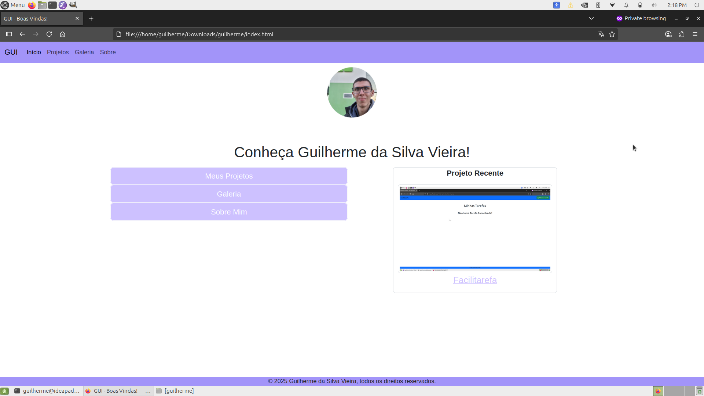

Site Pessoal

Meu site pessoal em Bootstrap para o trabalho final de Web Design.
Implementei alguns códigos em JavaScript nele, como por exemplo para apresentar o texto do rodapé e calcular minha idade na página sobre.
Gostaria de agradecer ao meu professor de Web Design Leo, por todas as aulas
sobre Web Design e Bootstrap que eu tive, com sua explicação sendo ótima e por ter me ajudado na implementação de um site muito especial para mim.